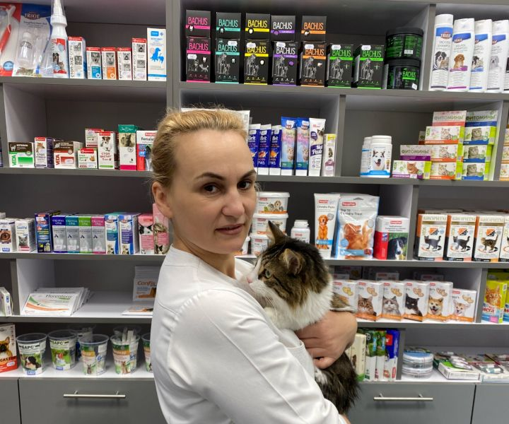
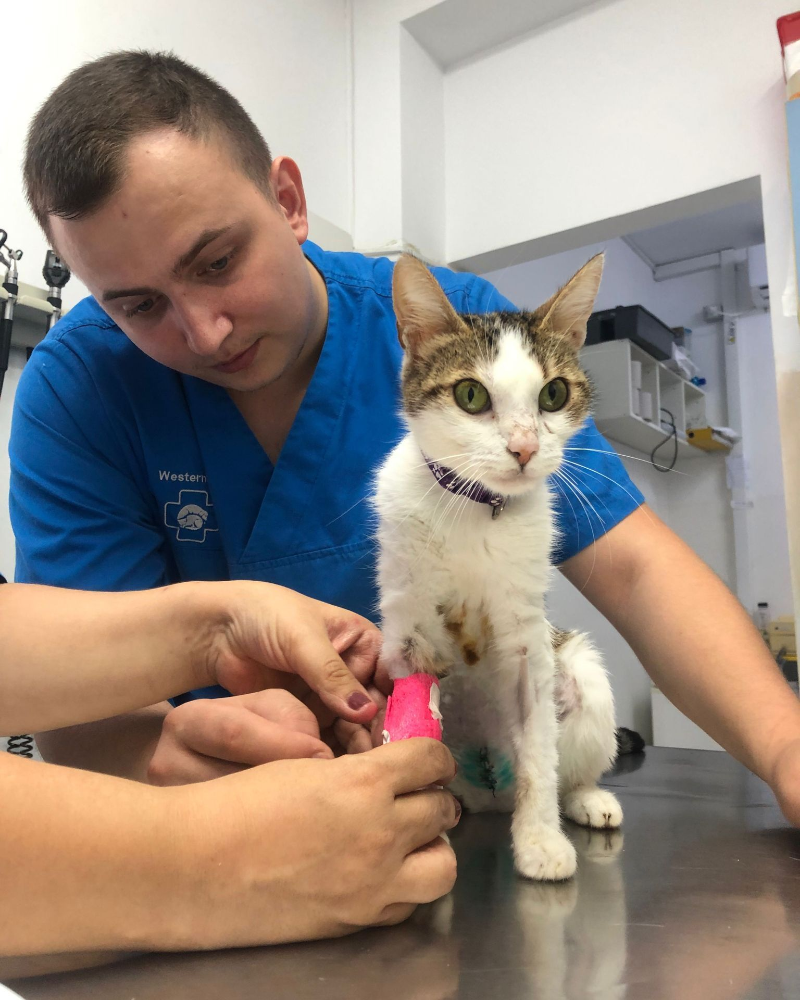
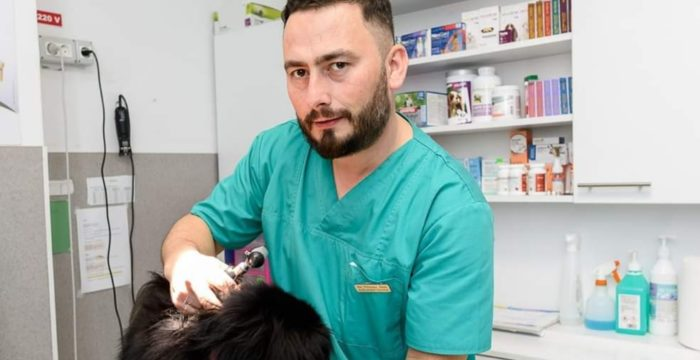

Dr. Elena Popescu Medic
Chirurgie și Medicină Internă
Dr. Elena este fondatoarea VetCare Cahul și are o pasiune deosebită pentru chirurgie veterinară. A tratat cu succes mii de animale de-a lungul carierei sale.
Experiență
15 ani experiență
Educație
Universitatea de Științe Agronomice și Medicină Veterinară, București
Contact
elena.popescu@vetcare-cahul.mdSpecializări

Dr. Andrei Moraru
Specialist Traumatologie și Ortopedie
Dr. Andrei s-a specializat în traumatologie și are o experiență vastă în tratarea fracturilor și leziunilor la animale.
Experiență
12 ani experiență
Educație
Universitatea de Medicină Veterinară, Iași
Contact
andrei.moraru@vetcare-cahul.mdSpecializări
.jpg)
Dr. Maria Ionescu
Dermatologie și Alergologie
Dr. Maria este expertă în diagnosticarea și tratarea afecțiunilor pielii și alergiilor la animale de companie.
Experiență
8 ani experiență
Educație
Universitatea de Științe Agricole, Chișinău
Contact
maria.ionescu@vetcare-cahul.mdSpecializări

Dr. Victor Russu
Cardiologie și Imagistică
Dr. Victor este specializat în cardiologie veterinară și în utilizarea echipamentelor moderne de diagnostic imagistic.
Experiență
10 ani experiență
Educație
Academia de Medicină Veterinară, București